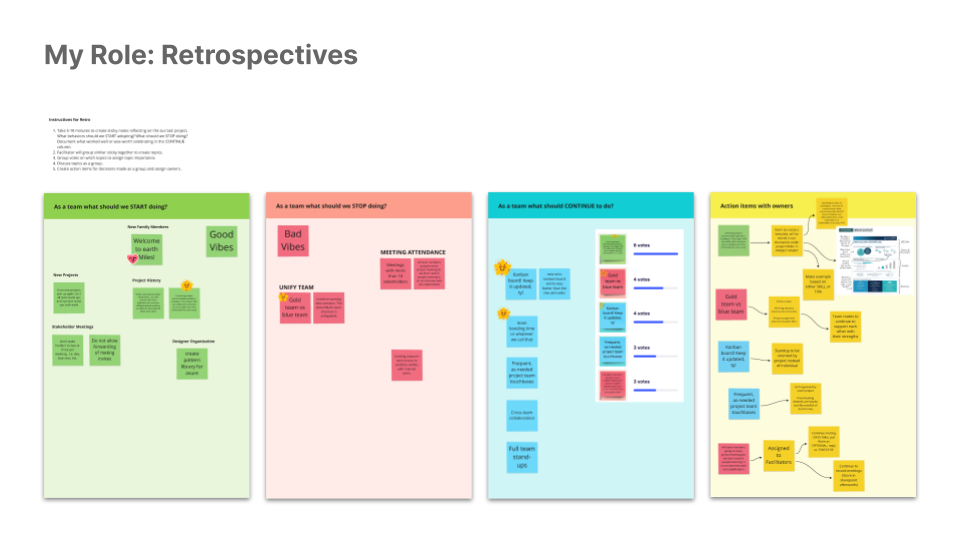
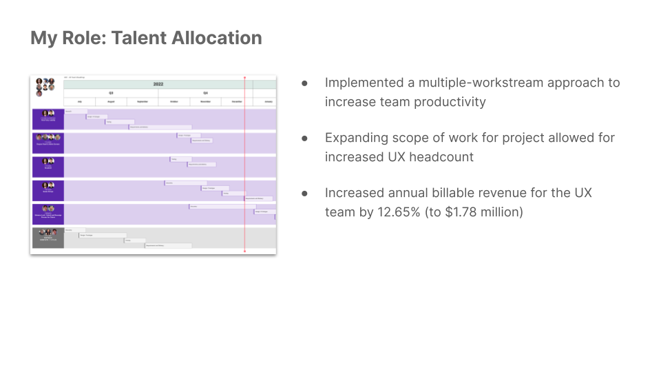
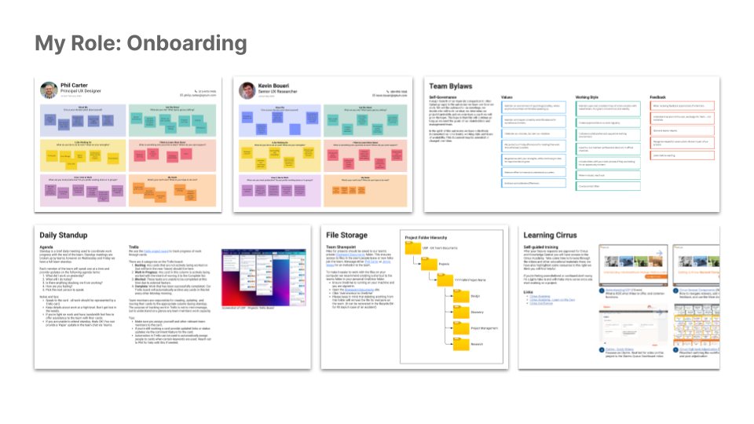
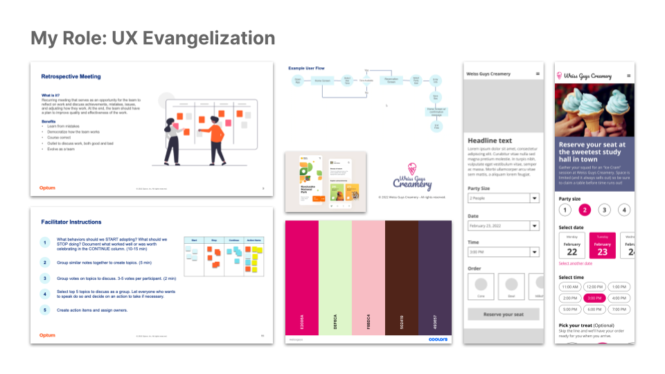
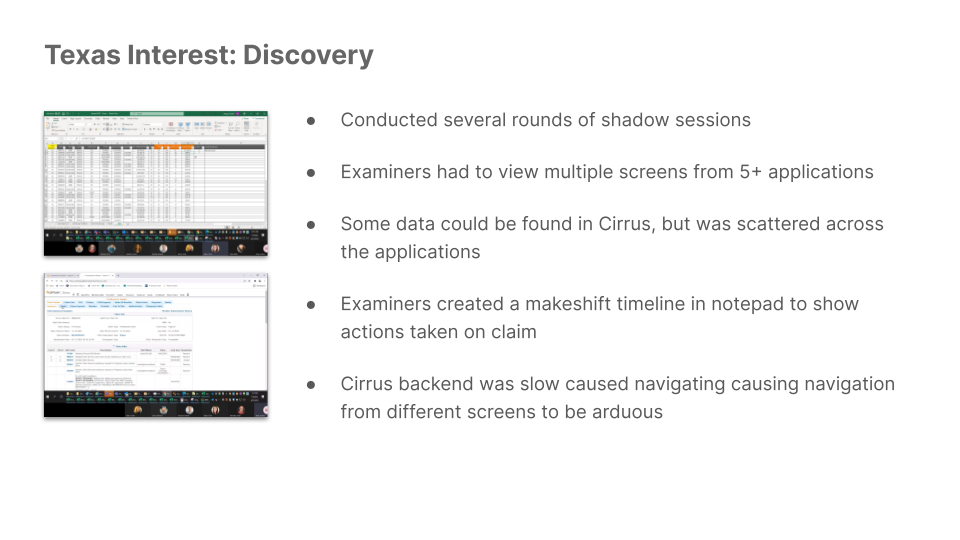
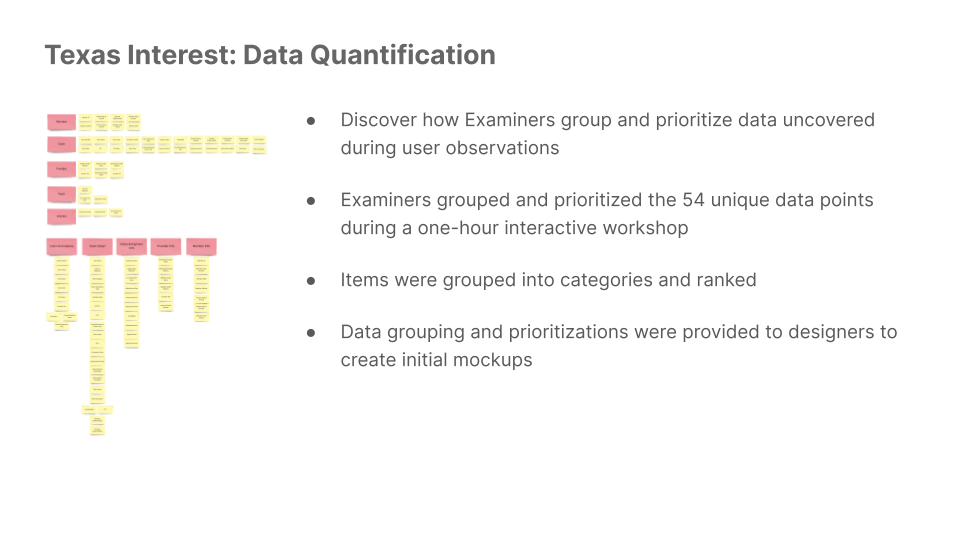
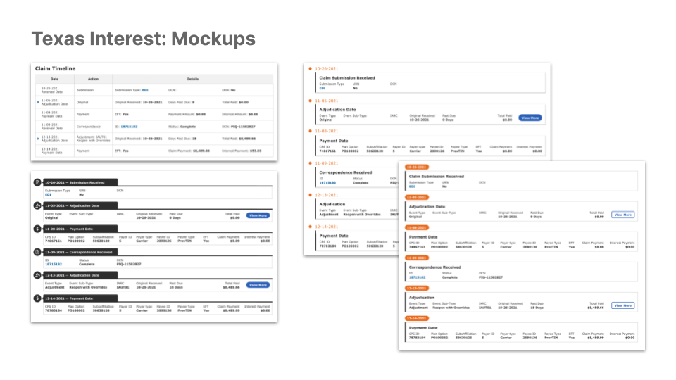
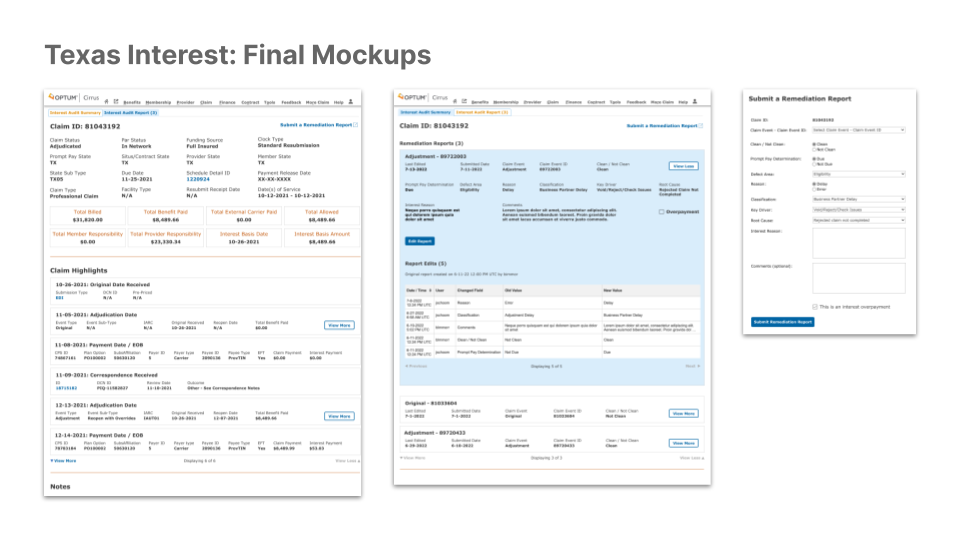
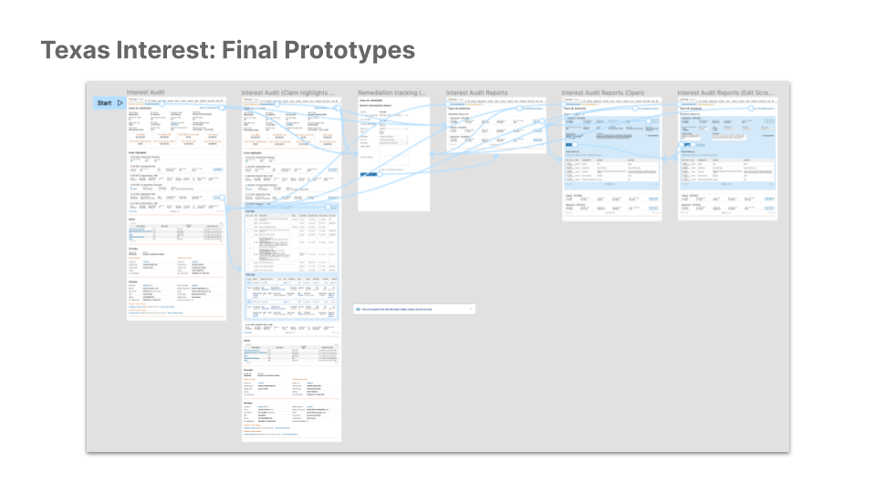
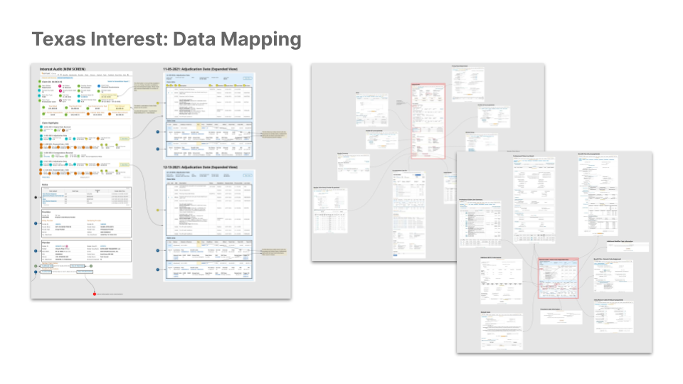

Claims Processing System
My Role
Principal UX Designer
Organization
Optum (UnitedHealth)
Teammates
Jenna Weiss
Kevin Boueri
Kaia Raid
Josh Espinosa
Summary
I was brought on by Optum (part of UnitedHealth Group) to lead the UX team supporting the Cirrus platform. Cirrus is an application used by internal employees to view, edit, and open/close claims. About 95% of all claims received by UnitedHealth are processed autonomously, and the Cirrus application is designed to serve as a front-end for Examiners to investigate and process the 5% of remaining claims. My team oversaw discovering efficiencies and reducing friction for the system, as shaving seconds from a repetitive task for hundreds of users could equate to huge efficiency gains.
My Role
As the team lead, I oversaw the work of eight (including myself) designers and researchers with various levels of experience. I facilitated the team’s daily standups, assigned tasks on the Kanban board, created budgets for talent assignments, coached team members on their deliverables, evangelized UX within the organization, coordinated with development teams on production deliverables, and frequently updated stakeholders on project status.
Shortly after being assigned to my team, I set several goals for myself and the team. Some highlights included setting the team members up for success, ensuring they receive credit and appreciation for their efforts, provide actionable insights to their work, and keeping their environment stable so they can focus on their work.
Another primary goal for my team was to provide them with more autonomy in the way they worked. To that end, I implemented the process of recurring retrospectives meetings. Based on feedback from the team this had great success. Some were hesitant at first, but I shortly began to hear how much they appreciated it. Making micro course corrections over time allowed the team to more easily learn from mistakes, democratize the way they worked, and be more open with each other. It was such a success that I was asked by senior leadership to share with other groups about how they could begin to run their own retrospectives.

Over time our team’s budget was increased to allow us to hire additional talent. In order to facilitate this expansion, I created extensive Cirrus specific onboarding documentation. My goal with which was to create a place for personnel to introduce themselves, find system training materials, request system access, and reference the team by-laws and work methodologies that we had established for ourselves. I also assigned designers/researchers to work streams so that we could support a dual-tracked development roadmap. This allowed smaller teams to work independently with their business and development stakeholders and allowed us to make quicker progress with business development goals for the year.

I aspire to be a leader worth following, and I believe the first step is by establishing a stable team culture built on earning, managing, and maintaining a team’s trust. Looking back, I’m quite proud of the team. I was very fortunate to have a talented and open group of people on my team. Their professionalism and fun nature made my job easy.
The Platform
Cirrus was easily the most complex application that I have encountered in my career. It has hundreds of screens, is built upon an older (and feature limiting) backend, has dozens of integrations with other internal platforms, and is used by hundreds of users to accomplish thousands of tasks worth millions of dollars every day.
Before work began on a new project, I ensured alignment between the UX team and stakeholders around topics such as project goals, what constituted success, metrics for tracking success, communication preferences, design and technical requirements, etc. Nine times out of ten success was defined by a reduction in time on task for Claim Examiners. To measure this, we implemented a Keystroke-Level Model (KLM) metric to accurately measure user efficiency gains with our delivered solutions.
I also used free time during project downtime to identify opportunities for system and our work process improvements. Since Cirrus was an older application and thus would not benefit from the Optum UI Pattern Library, I tasked our team to create a Cirrus specific platform within Figma. I oversaw its development, set measurable goals for expansion, and facilitated socialization of the toolkit amongst designers for adoption. This library sped up our prototype development time by creating a centralized location for design patterns, and helped me become more familiar with Figma in the process.
I spent just over a year shadowing users, working with business stakeholders, and partnering with developers for the Cirrus platform. When my time was complete, I’d say I had only explored a small percentage of its functionality. While it might not be the most exciting system to behold, the improvements we created were noticeable and appreciated by the hundreds of employees who had to work in the system daily.
The Project: Texas Interest
The state of Texas has a law mandating claims submitted to an insurance company must be processed and paid within a set amount of time. Failure to do so results in interest being applied to the claim total and owed to the medical service provider from the insurance company.
Claim Examiners are responsible for investigating the validity of a claim flagged for owing interest. They are able to complete this work with their existing tools. However, it was identified by users and business partners to be inefficient and time consuming. Additional Examiners who support different jurisdictions were also waiting to be migrated over to the Cirrus platform, and the current process for investigating interest payment validity would not scale. A solution needed to be created to solve the problem for Texas but also serve as a template for other jurisdictions in the future.
Discovery
We identified a list of Examiners who we could interview and perform shadow sessions to understand the current process. After several rounds, we identified the following high-level opportunities for improvement:
- Examiners had to access about 15 different screens in 5+ applications per claim. These systems did not share data with each other or with Cirrus.
- Some of the information in other systems existed within Cirrus, but was scattered around to different parts of the application. Critical information that was missing would need to be migrated to our platform from other systems.
- In order to prove the validity of the claim, Examiners had to create a makeshift timeline of all actions performed by everyone who touched the claim to manage the cognitive load. They usually created this in a notepad.
- Cirrus’ slow loading times necessitated a new screen be built to serve all functions of claim examiners performing this task.

Solution
We set out to assemble the critical components of this new screen, building over 13 iterations. Testing its efficacy with frequent check-ins to business stakeholders and user testing sessions.
We surfaced critical claim information at the top of the screen, as well as any monetary transactions or outstanding balances. The real value in this page was the creation of the claim timeline. We ended up calling it ‘Claim Highlights’ as there was already another timeline feature used for a different purpose within the application by a different group. In this section of the page we outline the date the claim was received, when it was adjudicated, correspondences, and payment decisions.

Displaying the correct information however was only half the battle. We needed to work closely with our development partners to understand where the data we wanted to display originated. To that end I created a document to map out the point of origin for data from all the disparate systems.

Conducting semi-structured interviews we determined that the screens would be successful in allowing Examiners to complete their work. We also created a Keystroke-Level Model (KLM) metrics for the current process and our new screens to measure potential velocity increases.
Business stakeholders anticipated that the implementation of our new screen which reduces time on task for claims investigations, decreases the frequency of paying interest on claims that are ineligible, and will scale to other jurisdictions as more Examiners are added to the platform will create an estimated savings of $20 millions dollars in the first year after deployment.
Testimonials
But hey, don’t just take my word for it! Here are some quotes I received during my annual review from the business team directly.
“Phil excels at effective communication, understands the objectives, and asks the critical questions to assess quality attributes and how that will be measured against constituent impacts. He consistently demonstrates a strong business ethic to ensure the proper delivery of our end state goal.”
Susan Raiford
Senior Project Manager
“Phil stepped into the UXDS role and hit the ground running. He has met with my team on numerous occasions to formulate solutions to different efficiency ideas. He is very good at providing different solution options and then tweaking based on feedback from the team. Phil is good at interpreting the teams' suggestions and creating a prototype based on those suggestions. He asks good questions to ensure understanding.”
Barb Morris
Claims Director